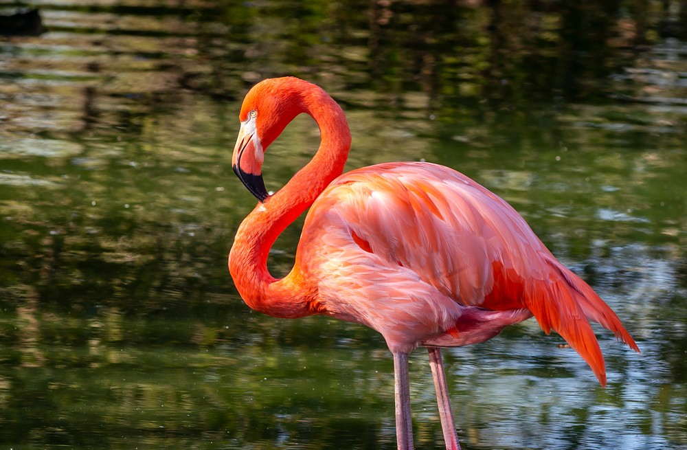
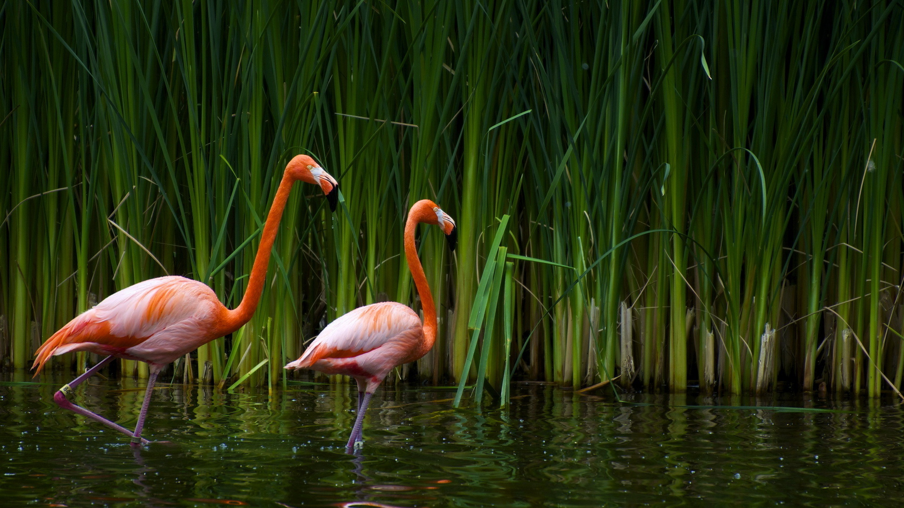
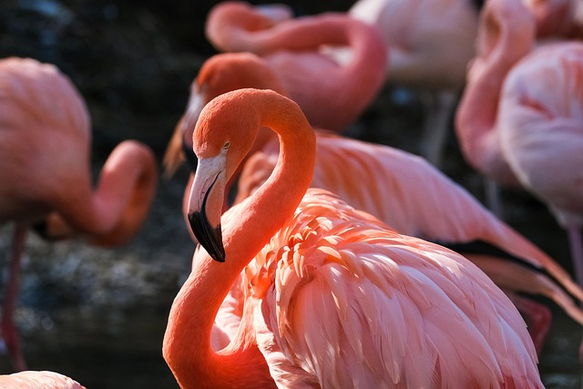

Flamingo
Phoenicopterus roseus
O flamingo-comum (Phoenicopterus roseus) é uma das aves mais emblemáticas e inconfundíveis do planeta, destacando-se pela sua silhueta esbelta e pela espetacular coloração rosada da sua plumagem. Dotado de pernas extremamente longas e finas, um pescoço longo e elegante e um bico robusto e curvado com uma estrutura filtrante única, este animal alia uma postura graciosa a uma enorme resistência. Vive habitualmente em grandes colónias barulhentas, deslocando-se com facilidade tanto a caminhar pelas margens lodosas como a voar em formações ordenadas com o pescoço e as patas esticados.
Habitat Natural
O flamingo-comum habita preferencialmente zonas húmidas de águas pouco profundas, estuários, lagoas costeiras salgadas e grandes lagos alcalinos ou salinos. Estas aves dependem de ecossistemas aquáticos abertos e extensos que lhes oferecem lodaçais seguros para a alimentação e ilhéus isolados ou margens de lama afastadas de predadores terrestres para a construção dos seus ninhos de lama em forma de tronco de cone. A sua distribuição natural estende-se por regiões subtropicais e temperadas de África, sul da Europa e sudoeste e centro da Ásia.
Dieta
O flamingo-comum é um alimentador por filtração altamente especializado. A sua dieta é composta essencialmente por pequenos crustáceos (como a Artemia salina), moluscos, larvas de insetos, algas microscópicas e matéria orgânica recolhida do fundo lodoso. Para se alimentar, o flamingo inverte a cabeça e utiliza a língua como uma bomba de sucção no interior do bico curvado, filtrando a água e retendo os nutrientes. É precisamente a ingestão de pigmentos carotenoides presentes nesses pequenos crustáceos e algas que confere à sua plumagem os tons rosados característicos.
Curiosidades
- As crias de flamingo nascem com uma plumagem cinzenta ou branca e bico reto, demorando vários anos a adquirir a coloração rosada e a curvatura típica do bico dos adultos.
- Dormem frequentemente empoleirados sobre apenas uma perna, um mecanismo fisiológico que ajuda a reduzir a perda de calor corporal através dos membros desprovidos de penas.
- Os ninhos são construídos com lama amontoada em forma de pequeno vulcão, no topo do qual a fêmea deposita um único ovo, que ambos os progenitores incubam de forma alternada.
Os nossos Flamingos
No Zoo Jonçela, uma colónia animada e colorida de flamingos-comuns — liderada pelo experiente macho Flamel e acompanhada pelas fêmeas Rosa e Coral — atrai todos os olhares na zona lagunar do parque. Com 8 anos de idade, o Flamel exibe uma plumagem de um tom rosa vivo impressionante, medindo cerca de 1,4 metros de altura e pesando perto de 3,5 kg. A Rosa e a Coral, com 6 e 5 anos, apresentam uma compleição igualmente elegante e plumagem rosada brilhante, pesando cerca de 3 kg cada. O grupo partilha um amplo habitat aquático com margens de lodo simuladas, onde demonstram o seu comportamento social fascinante.